library(devtools)
devtools::load_all("..", quiet = TRUE, reset = TRUE)
library(ggplot2)
library(igraph)
library(Matrix)
library(scater)
library(standR)TATA Step-by-Step Multi-Drug Demo
Load the package functions
This demo uses devtools::load_all() so the current source tree is loaded directly. The reset = TRUE argument is helpful during development because it avoids using a stale version of a function from a previous session.
Simulate a center-rooted multi-drug trajectory
We start with a simulated dataset where the earliest cells sit near the middle of the embedding. This makes the geometry intentionally awkward for topology-only trajectory methods:
drug_Aextends in one direction and emerges early, around 24 hoursdrug_Cextends along a third arm and emerges around 48 hoursdrug_Bextends in the opposite direction todrug_Aand emerges late, around 96 hours
The idea is to create a case where time should help orient the abstract graph, because the root is not sitting at an obvious visual tip.
set.seed(101)
sce <- simulate_tata_multidrug_sce(
n_cells = 5000,
n_features = 100,
n_pcs = 20,
seed = 101
)
sce$timepoint_factor <- factor(
sce$timepoint,
levels = sort(unique(sce$timepoint))
)with(as.data.frame(SummarizedExperiment::colData(sce)), table(condition, timepoint)) timepoint
condition 0 24 48 72 96 120
drug_A 268 276 269 301 269 276
drug_B 333 244 333 276 333 231
drug_C 308 205 321 231 321 205Visualise the simulated embedding
These plots show the same UMAP coloured in different ways so we can inspect the simulation before running any trajectory inference.
standR::plotDR(sce, dimred = "UMAP", colour = timepoint_factor) +
ggplot2::ggtitle("Simulated embedding coloured by experimental time")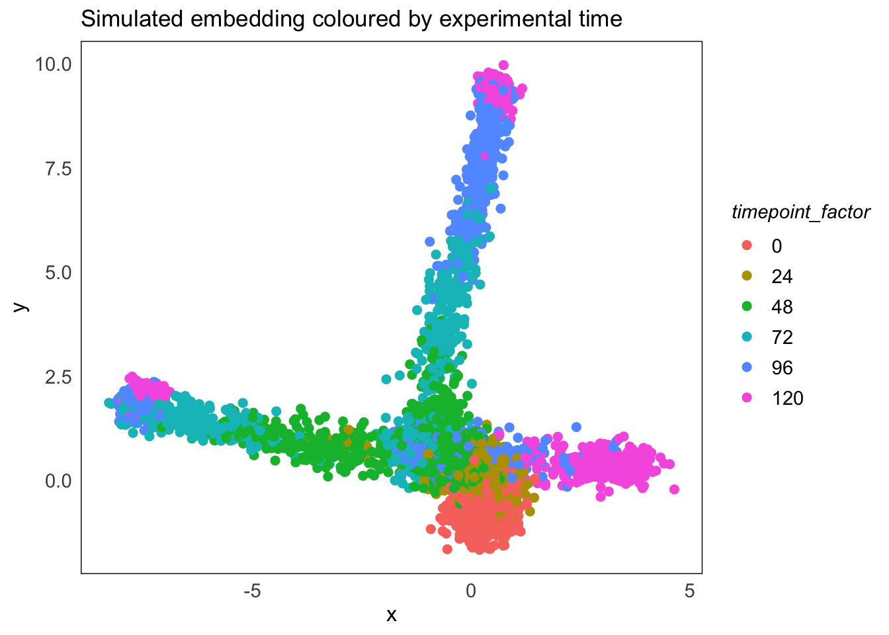
standR::plotDR(sce, dimred = "UMAP", colour = condition) +
ggplot2::ggtitle("Simulated embedding coloured by drug condition")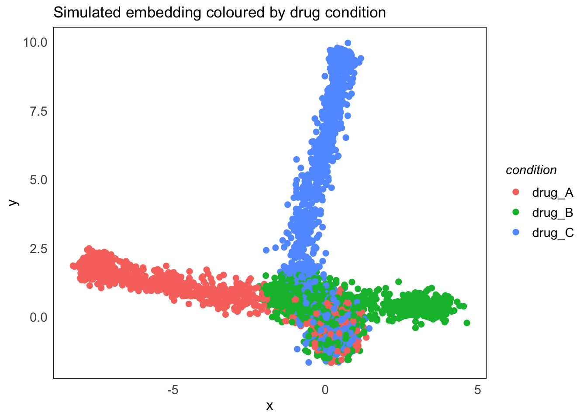
standR::plotDR(sce, dimred = "UMAP", colour = simulated_state) +
ggplot2::ggtitle("Simulated embedding coloured by ground-truth state")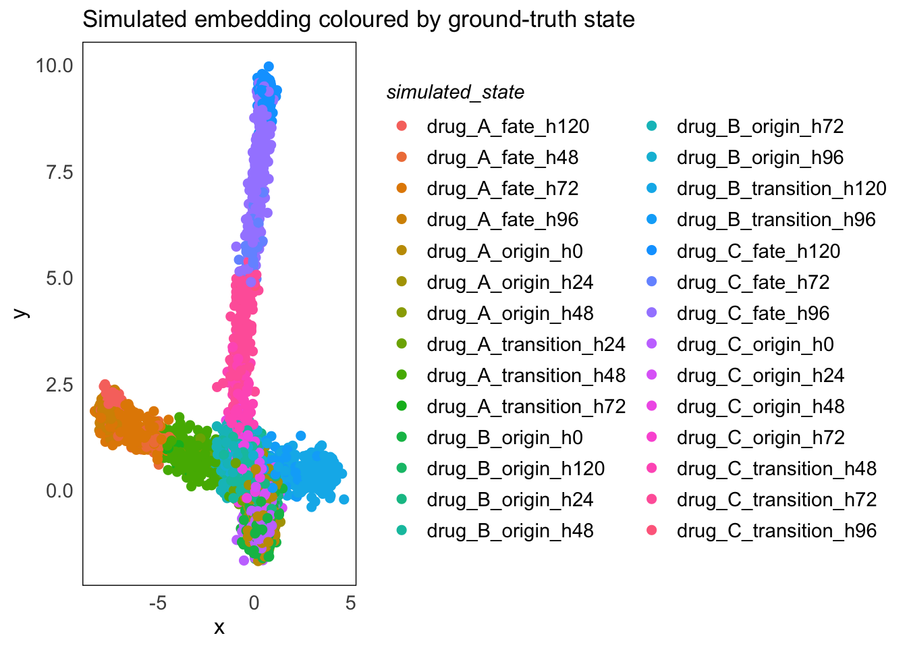
standR::plotDR(sce, dimred = "UMAP", colour = branch_activation) +
ggplot2::scale_colour_viridis_c(option = "magma") +
ggplot2::ggtitle("Simulated embedding coloured by branch activation")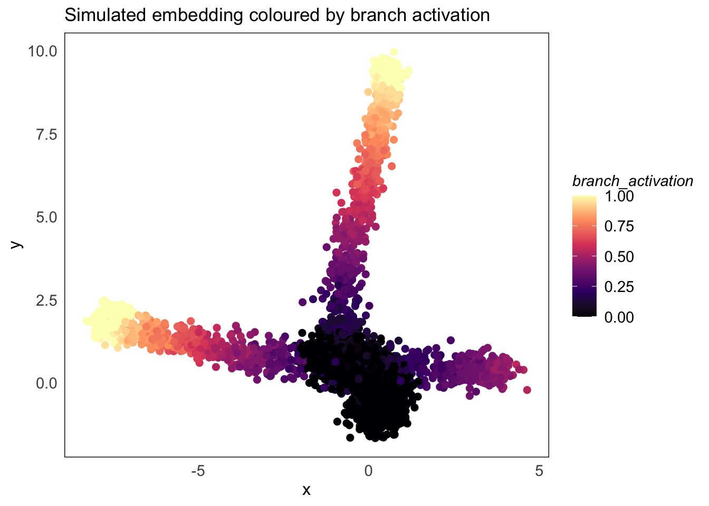
Step 1: Build the cell-cell kNN graph
TATA starts from a low-dimensional representation of cells. Here we use the stored PCA coordinates and build an undirected kNN graph.
knn <- build_knn_graph(
x = sce,
dimred = "PCA",
k = 30
)
c(
n_cells = igraph::vcount(knn$graph),
n_edges = igraph::ecount(knn$graph),
k = knn$k
)n_cells n_edges k
5000 91869 30 To make the cell graph easier to inspect, we draw a random subset of graph edges on top of the UMAP.
umap_df <- as.data.frame(SingleCellExperiment::reducedDim(sce, "UMAP"))
colnames(umap_df)[1:2] <- c("UMAP1", "UMAP2")
umap_df$timepoint <- sce$timepoint
edge_df <- Matrix::summary(Matrix::triu(knn$adjacency, k = 1))
set.seed(101)
edge_df <- edge_df[sample(seq_len(nrow(edge_df)), min(5000, nrow(edge_df))), , drop = FALSE]
edge_plot_df <- data.frame(
x = umap_df$UMAP1[edge_df$i],
y = umap_df$UMAP2[edge_df$i],
xend = umap_df$UMAP1[edge_df$j],
yend = umap_df$UMAP2[edge_df$j]
)
ggplot() +
geom_segment(
data = edge_plot_df,
aes(x = x, y = y, xend = xend, yend = yend),
colour = "grey82",
alpha = 0.18,
linewidth = 0.2
) +
geom_point(
data = umap_df,
aes(x = UMAP1, y = UMAP2, colour = timepoint),
size = 0.5,
alpha = 0.8
) +
scale_colour_viridis_c(option = "plasma") +
theme_classic() +
labs(
title = "A sampled view of the cell-cell kNN graph on UMAP",
x = "UMAP_1",
y = "UMAP_2",
colour = "timepoint"
)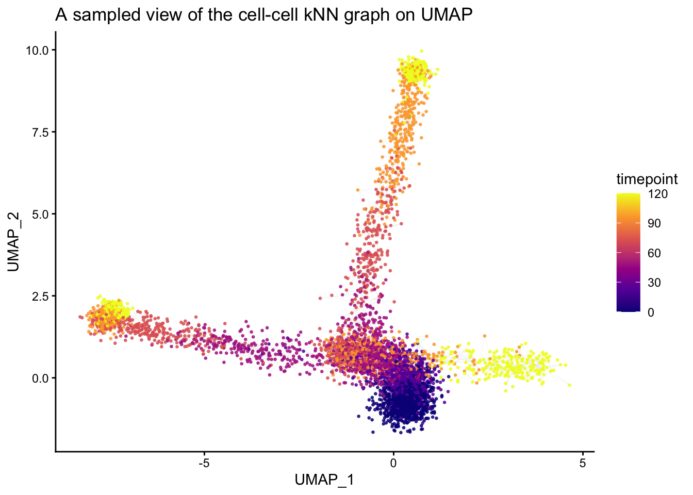
Step 2: Cluster the cell graph into coarse states
The cell graph is next clustered into partitions or states. These states are the nodes of the final abstract TATA graph.
clusters <- cluster_graph_states(
cell_graph = knn$graph,
method = "louvain",
seed = 101
)
sce$tata_cluster_step <- clusters
sce$tata_cluster_step <- factor(sce$tata_cluster_step)
table(sce$tata_cluster_step)
C1 C2 C3 C4 C5 C6 C7 C8 C9 C10 C11 C12 C13 C14 C15 C16 C17 C18
302 413 278 390 208 155 247 258 134 471 250 283 237 358 131 432 261 192 standR::plotDR(sce, dimred = "UMAP", colour = tata_cluster_step) +
ggplot2::ggtitle("UMAP coloured by graph-based TATA states")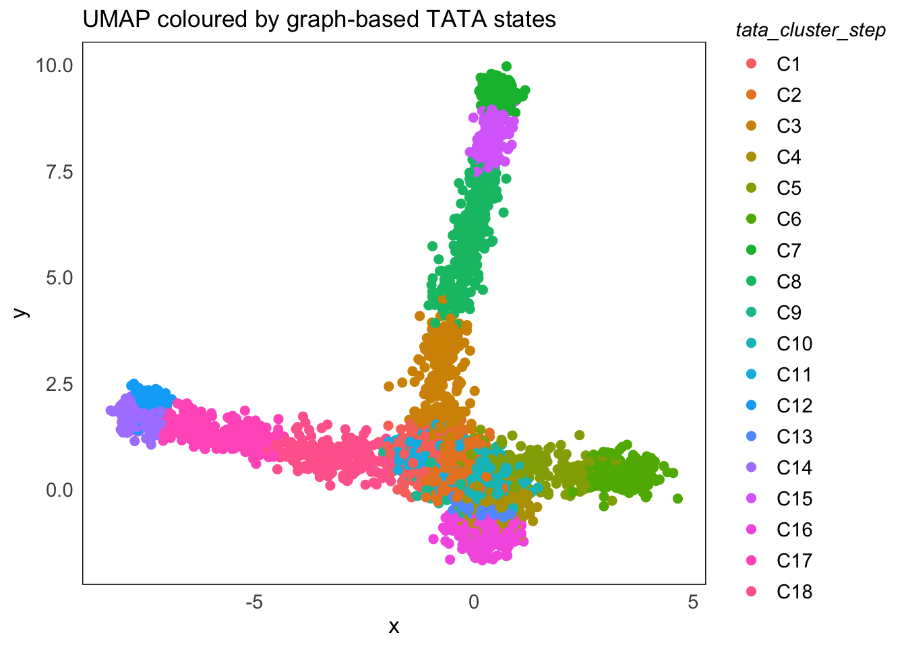
Step 3: Compute topology-based connectivity between clusters
For every cluster pair, we count inter-cluster cell-cell edges and compare that count to a degree-aware expectation. This gives the topology term used by TATA.
topology_table <- compute_topology_weights(
adjacency = knn$adjacency,
clusters = sce$tata_cluster_step
)
head(
topology_table[
order(-topology_table$topology_weight),
c("cluster_a", "cluster_b", "observed_edges", "expected_edges", "topology_weight")
],
12
) cluster_a cluster_b observed_edges expected_edges topology_weight
57 C4 C13 629 704.9681 0.8922390
141 C13 C16 681 793.1563 0.8585950
10 C1 C11 409 587.0445 0.6967104
117 C9 C18 105 155.7000 0.6743740
105 C8 C15 140 229.8151 0.6091854
54 C4 C10 826 1407.5030 0.5868549
95 C7 C15 140 245.1258 0.5711353
1 C1 C2 473 969.4970 0.4878818
63 C5 C6 92 202.3420 0.4546757
60 C4 C16 460 1273.4477 0.3612241
25 C2 C10 525 1543.3635 0.3401661
68 C5 C11 116 344.9831 0.3362484topology_top <- topology_table[order(-topology_table$topology_weight), ][1:15, ]
topology_top$pair <- paste(topology_top$cluster_a, topology_top$cluster_b, sep = " -- ")
ggplot(topology_top, aes(x = reorder(pair, topology_weight), y = topology_weight)) +
geom_col(fill = "#2c7fb8") +
coord_flip() +
theme_classic() +
labs(
title = "Top cluster pairs by topology weight",
x = "cluster pair",
y = "topology weight"
)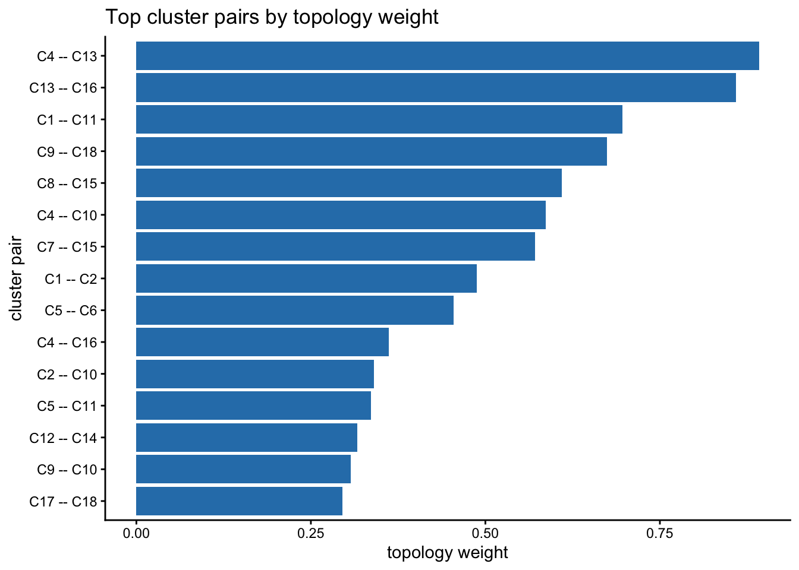
Step 4: Compute time consistency for cluster-cluster connections
Now we use the real experimental time labels. For each cluster pair, TATA computes:
flow_score: the mean sign of time differences across inter-cluster edgestime_weight: the ordered-pair scoretime_consistency: a direction-strength score used by the multi-branch-aware weighting mode
time_table <- compute_time_weights(
adjacency = knn$adjacency,
clusters = sce$tata_cluster_step,
timepoint = sce$timepoint
)
head(
time_table[
order(-time_table$time_consistency),
c("cluster_a", "cluster_b", "n_time_edges", "flow_score", "time_weight", "time_consistency")
],
12
) cluster_a cluster_b n_time_edges flow_score time_weight time_consistency
39 C3 C9 1 -1.00000000 0.0000000 1.0000000
25 C2 C10 525 -0.24190476 0.3790476 0.6209524
2 C1 C3 9 0.22222222 0.6111111 0.6111111
134 C12 C14 250 -0.20000000 0.4000000 0.6000000
1 C1 C2 473 -0.12050740 0.4397463 0.5602537
10 C1 C11 409 0.11491443 0.5574572 0.5574572
18 C2 C3 207 0.11111111 0.5555556 0.5555556
117 C9 C18 105 -0.09523810 0.4523810 0.5476190
153 C17 C18 99 -0.09090909 0.4545455 0.5454545
146 C14 C17 179 -0.08938547 0.4553073 0.5446927
60 C4 C16 460 -0.06086957 0.4695652 0.5304348
109 C9 C10 134 0.05223881 0.5261194 0.5261194edge_metric_table <- merge(
topology_table,
time_table,
by = c("cluster_a", "cluster_b"),
all.x = TRUE,
sort = FALSE
)
ggplot(
edge_metric_table,
aes(
x = topology_weight,
y = flow_score,
size = observed_edges,
colour = time_consistency
)
) +
geom_hline(yintercept = c(-0.10, 0.10), linetype = 2, colour = "grey60") +
geom_point(alpha = 0.8) +
scale_colour_viridis_c(option = "plasma") +
theme_classic() +
labs(
title = "Topology and time consistency for cluster pairs",
x = "topology weight",
y = "temporal flow score",
colour = "time consistency",
size = "observed edges"
)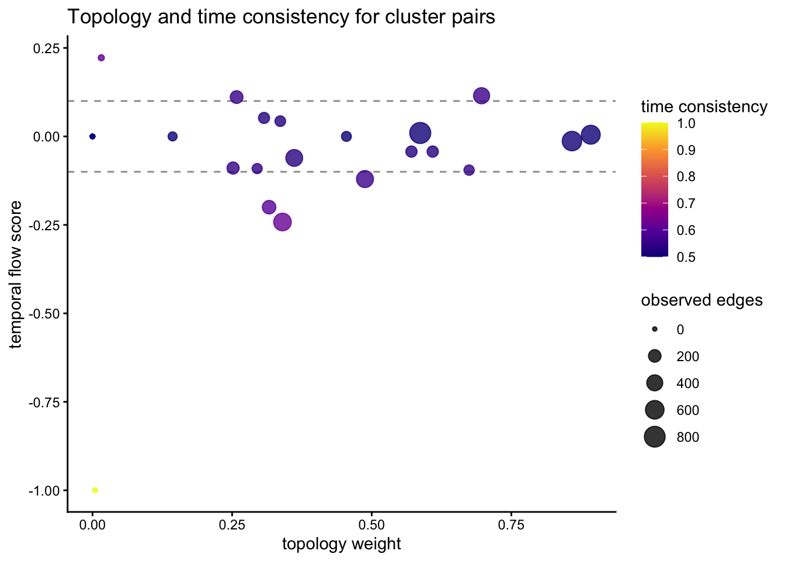
Step 5: Build the abstract TATA graph
Here we combine topology and time into the final TATA edge weight. We use time_weight_mode = "directional_confidence" because it is more robust in multi-branch settings where the biological direction may not match the alphabetical ordering of the cluster labels.
tata_graph_manual <- build_tata_graph(
topology_table = topology_table,
time_table = time_table,
clusters = sce$tata_cluster_step,
embedding = SingleCellExperiment::reducedDim(sce, "PCA"),
timepoint = sce$timepoint,
alpha = 1,
beta = 1,
direction_threshold = 0.10,
prune_threshold = 0.001,
time_weight_mode = "directional_confidence"
)
head(
tata_graph_manual$edge_table[
order(-tata_graph_manual$edge_table$tata_weight),
c(
"cluster_a",
"cluster_b",
"topology_weight",
"flow_score",
"time_weight",
"time_consistency",
"tata_weight",
"direction_label",
"kept"
)
],
12
) cluster_a cluster_b topology_weight flow_score time_weight
57 C4 C13 0.8922390 0.004769475 0.5023847
141 C13 C16 0.8585950 -0.013215859 0.4933921
10 C1 C11 0.6967104 0.114914425 0.5574572
117 C9 C18 0.6743740 -0.095238095 0.4523810
105 C8 C15 0.6091854 -0.042857143 0.4785714
95 C7 C15 0.5711353 -0.042857143 0.4785714
54 C4 C10 0.5868549 0.009685230 0.5048426
1 C1 C2 0.4878818 -0.120507400 0.4397463
63 C5 C6 0.4546757 0.000000000 0.5000000
25 C2 C10 0.3401661 -0.241904762 0.3790476
60 C4 C16 0.3612241 -0.060869565 0.4695652
134 C12 C14 0.3162203 -0.200000000 0.4000000
time_consistency tata_weight direction_label kept
57 0.5023847 0.4482473 C4 -- C13 TRUE
141 0.5066079 0.4349710 C13 -- C16 TRUE
10 0.5574572 0.3883863 C1 -> C11 TRUE
117 0.5476190 0.3693000 C9 -- C18 TRUE
105 0.5214286 0.3176467 C8 -- C15 TRUE
95 0.5214286 0.2978062 C7 -- C15 TRUE
54 0.5048426 0.2962693 C4 -- C10 TRUE
1 0.5602537 0.2733376 C2 -> C1 TRUE
63 0.5000000 0.2273378 C5 -- C6 TRUE
25 0.6209524 0.2112270 C10 -> C2 TRUE
60 0.5304348 0.1916058 C4 -- C16 TRUE
134 0.6000000 0.1897322 C14 -> C12 TRUEplot_tata_cluster_graph(
list(
cluster_graph = tata_graph_manual$graph,
sce = sce,
parameters = list(cluster_col = "tata_cluster_step")
),
dimred = "UMAP",
layout_mode = "embedding",
show_cells = TRUE,
colour_by = "tata_cluster_step",
node_colour_by = "cluster",
main = "Manual TATA graph aligned to UMAP"
)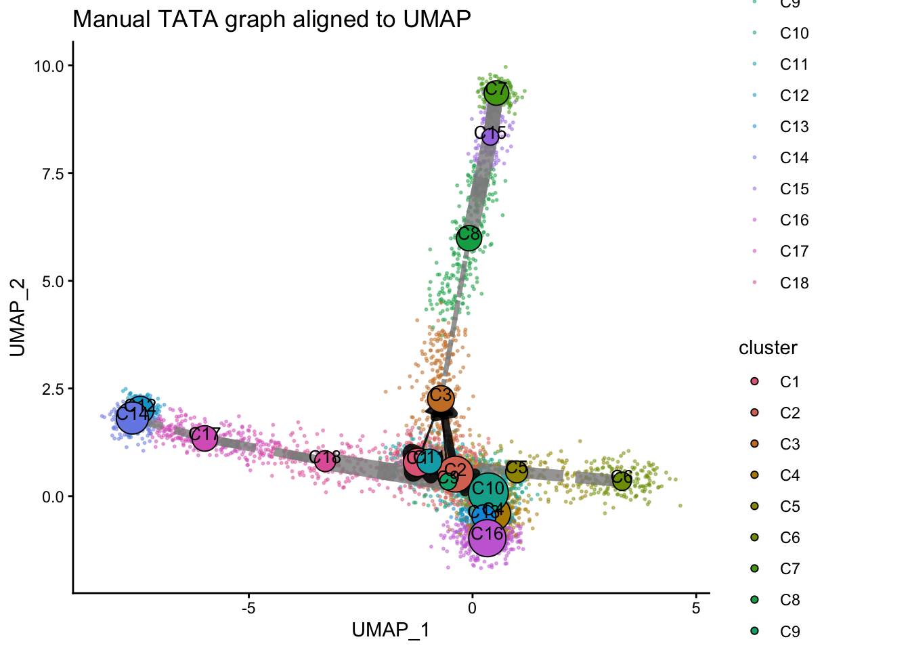
Step 6: Compute pseudotime on the directed TATA graph
The root cluster is chosen from the earliest clusters, with a centrality-aware tie-break. Cluster-level pseudotime is then propagated to cells using within-cluster time ranks.
sce_manual <- sce
sce_manual$tata_cluster_step <- sce$tata_cluster_step
pseudotime_manual <- compute_tata_pseudotime(
cluster_graph = tata_graph_manual$graph,
sce = sce_manual,
cluster_col = "tata_cluster_step",
time_col = "timepoint"
)
sce_manual$tata_pseudotime_step <- pseudotime_manual$cell_pseudotime_scaled
pseudotime_manual$cluster_pseudotime cluster pseudotime scaled_pseudotime median_time size reachable
C16 C16 0.000000 0.00000000 0 432 TRUE
C13 C13 2.299004 0.05738344 0 237 TRUE
C4 C4 4.529915 0.11306730 0 390 TRUE
C10 C10 7.905222 0.19731542 24 471 TRUE
C2 C2 12.639466 0.31548279 48 413 TRUE
C9 C9 14.093537 0.35177658 24 134 TRUE
C1 C1 16.297946 0.40679893 72 302 TRUE
C18 C18 16.801362 0.41936427 48 192 TRUE
C11 C11 18.872702 0.47106520 96 250 TRUE
C3 C3 19.615789 0.48961274 48 278 TRUE
C17 C17 23.019556 0.57457124 72 261 TRUE
C5 C5 24.574902 0.61339287 96 208 TRUE
C6 C6 28.973641 0.72318601 120 155 TRUE
C14 C14 30.312601 0.75660662 96 358 TRUE
C8 C8 33.557845 0.83760836 96 258 TRUE
C12 C12 35.583187 0.88816117 120 283 TRUE
C15 C15 36.705998 0.91618666 96 131 TRUE
C7 C7 40.063885 1.00000000 120 247 TRUE
reachable_directed used_undirected_fallback is_root
C16 TRUE FALSE TRUE
C13 TRUE FALSE FALSE
C4 TRUE FALSE FALSE
C10 TRUE FALSE FALSE
C2 TRUE FALSE FALSE
C9 TRUE FALSE FALSE
C1 TRUE FALSE FALSE
C18 TRUE FALSE FALSE
C11 TRUE FALSE FALSE
C3 TRUE FALSE FALSE
C17 TRUE FALSE FALSE
C5 TRUE FALSE FALSE
C6 TRUE FALSE FALSE
C14 TRUE FALSE FALSE
C8 TRUE FALSE FALSE
C12 TRUE FALSE FALSE
C15 TRUE FALSE FALSE
C7 TRUE FALSE FALSEstandR::plotDR(sce_manual, dimred = "UMAP", colour = tata_pseudotime_step) +
ggplot2::scale_colour_viridis_c(option = "plasma") +
ggplot2::ggtitle("UMAP coloured by manually computed TATA pseudotime")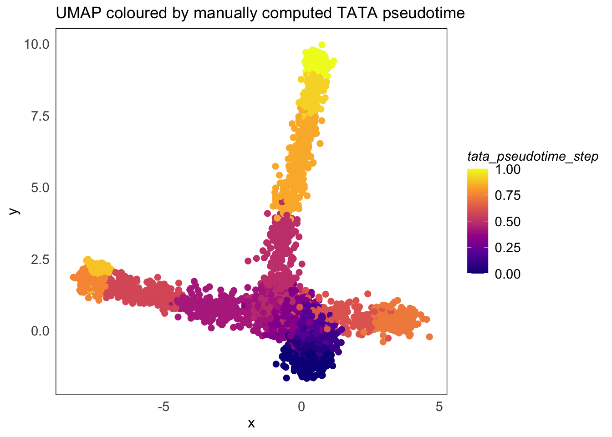
Step 7: Run the convenience wrapper
The run_tata() wrapper performs the same major steps in one call and returns all of the intermediate and final objects in a package-friendly list.
tata <- run_tata(
sce = sce,
dimred = "PCA",
time_col = "timepoint",
cluster_col = "tata_cluster",
k = 30,
cluster_method = "louvain",
alpha = 1,
beta = 1,
time_weight_mode = "directional_confidence",
direction_threshold = 0.10,
prune_threshold = 0.001,
do_pseudotime = TRUE,
seed = 101
)
sce_tata <- tata$sce
sce_tata$tata_cluster <- factor(sce_tata$tata_cluster)names(tata) [1] "sce" "cell_graph" "adjacency_matrix"
[4] "cluster_graph" "cluster_edge_table" "cluster_vertex_table"
[7] "cluster_pseudotime" "cell_pseudotime" "cell_pseudotime_scaled"
[10] "parameters" "topology_table" "time_table" Step 8: Visualise the wrapper output
The first graph plot is the closest analogue to a PAGA-style compare view: cluster nodes are placed at their UMAP centroids so the abstract graph lives in the same visual space as the embedding.
plot_tata_cluster_graph(
tata,
dimred = "UMAP",
layout_mode = "embedding",
show_cells = TRUE,
colour_by = "tata_cluster",
node_colour_by = "cluster",
main = "TATA abstract graph aligned to UMAP"
)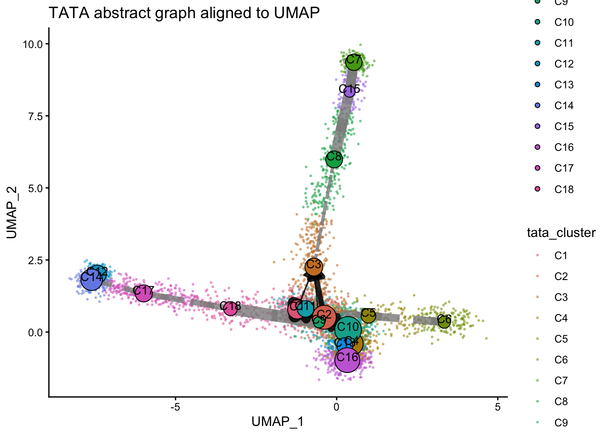
The first plot uses the detailed path view. This is useful for debugging branch-level structure because it shows every retained root-to-terminal path.
plot_tata_trajectory_embedding(
tata,
dimred = "UMAP",
colour_by = "timepoint",
mode = "full",
smooth_paths = TRUE
) +
ggplot2::ggtitle("Time-aware TATA trajectories on UMAP: full mode")The second plot uses the new combined mode. It compresses paths with a shared trunk and shows only one long arrow per major branch.
plot_tata_trajectory_embedding(
tata,
dimred = "UMAP",
colour_by = "timepoint",
mode = "combined",
max_paths = 3,
smooth_paths = TRUE
) +
ggplot2::ggtitle("Time-aware TATA trajectories on UMAP: combined mode")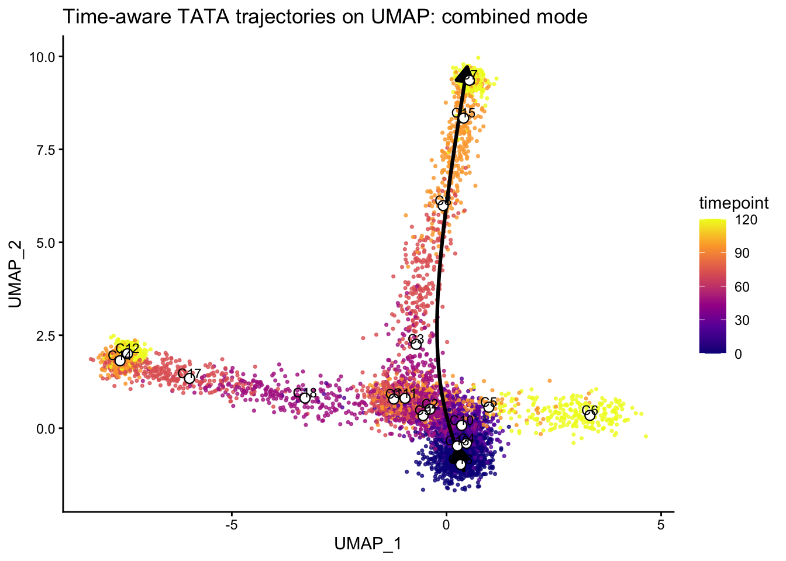
standR::plotDR(sce_tata, dimred = "UMAP", colour = tata_cluster) +
ggplot2::ggtitle("UMAP coloured by TATA-inferred cluster")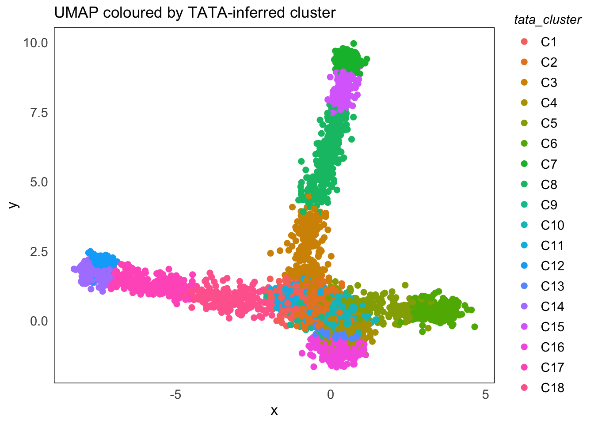
standR::plotDR(sce_tata, dimred = "UMAP", colour = tata_pseudotime_scaled) +
ggplot2::scale_colour_viridis_c(option = "plasma") +
ggplot2::ggtitle("UMAP coloured by TATA scaled pseudotime")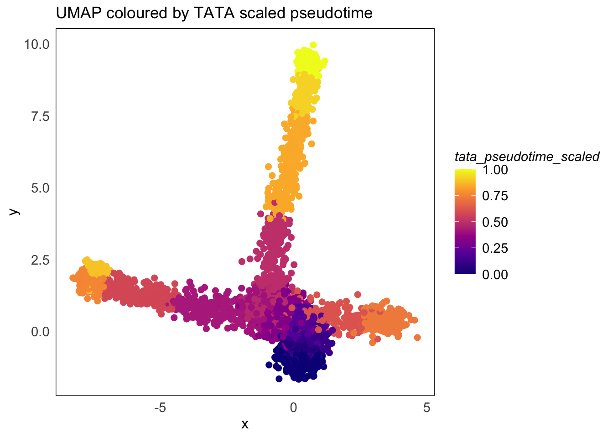
Optional comparison: topology-only baseline
Finally, we remove the time contribution by setting beta = 0. This gives a useful visual comparison against the full time-aware result.
tata_topology_only <- run_tata(
sce = sce,
dimred = "PCA",
time_col = "timepoint",
cluster_col = "tata_cluster_topology_only",
k = 30,
cluster_method = "louvain",
alpha = 1,
beta = 0,
time_weight_mode = "directional_confidence",
direction_threshold = 0.10,
prune_threshold = 0.001,
do_pseudotime = TRUE,
seed = 101
)plot_tata_trajectory_embedding(
tata_topology_only,
dimred = "UMAP",
colour_by = "timepoint",
mode = "full",
max_paths = 3,
smooth_paths = TRUE
) +
ggplot2::ggtitle("Topology-only baseline on UMAP: combined mode")benchmark with other tools
This section compares the time-aware TATA workflow against two widely used alternatives on the same simulated dataset:
slingshot, a branching trajectory method based on cluster topology and principal curvesscShaper, a fast ensemble method designed for linear pseudotime inference
The benchmark is intentionally not summarized by a single “winner” score, because this simulation was designed to stress a specific weakness of topology-only methods: the biological origin sits near the middle of the embedding, and one treatment branch emerges later than the others. We therefore look at several complementary metrics:
graph_based_trustworthiness: an embedding-based score that asks whether cells that become neighbours in the inferred trajectory space were also close in the known latent trajectoryneighborhood_preservation_score: an embedding-based score that measures how much the localk-nearest-neighbour structure is preserved between the known latent trajectory and the inferred trajectory spacewasserstein_distance_for_embedding: a higher-is-better score derived from a Wasserstein-style comparison between the pairwise-distance distributions of the known latent trajectory and the inferred trajectory spacelocal_time_concordance: the fraction of local cell-cell graph edges whose inferred pseudotime direction agrees with the true experimental time directionlocal_temporal_direction_score: a higher-is-better transformation of the local inversion rate, so values near1indicate that local pseudotime directions mostly agree with experimental timeadjacent_timepoint_auc: for each pair of adjacent timepoints, the probability that later cells have larger inferred pseudotime than earlier cellsbranch_onset_order_score: a higher-is-better rescaling of the Kendall correlation between the known branch-emergence order (drug_A<drug_C<drug_B) and the inferred onset orderbranch_onset_accuracy: a higher-is-better transformation of the normalized branch-onset error
Because scShaper is not distributed through Bioconductor, the benchmark code below is optional and will be skipped automatically if either external package is unavailable. The vignette still renders without the benchmark, but when the packages are installed this section provides a useful side-by-side comparison.
have_benchmark_pkgs <- requireNamespace("slingshot", quietly = TRUE) &&
requireNamespace("scShaper", quietly = TRUE)
if (have_benchmark_pkgs) {
library(slingshot)
library(scShaper)
library(SingleCellExperiment)
} else {
message(
"Benchmark section skipped because `slingshot` or `scShaper` is not installed."
)
}Benchmark helpers
The next chunk defines a few small helper functions used only in this vignette. The more generally useful temporal benchmark metrics are now available directly from the package; the local helpers below are mainly for constructing the paper-inspired latent spaces and computing the embedding-based benchmark metrics.
if (have_benchmark_pkgs) {
scale_to_unit <- function(x) {
rng <- range(x, na.rm = TRUE)
if (!all(is.finite(rng)) || diff(rng) < .Machine$double.eps) {
return(rep(0, length(x)))
}
(x - rng[1]) / diff(rng)
}
normalize_rows <- function(mat) {
rs <- rowSums(mat, na.rm = TRUE)
rs[!is.finite(rs) | rs <= 0] <- 1
sweep(mat, 1, rs, "/")
}
stratified_sample_idx <- function(sce, n_per_group = 70, seed = 101) {
set.seed(seed)
group <- interaction(sce$condition, sce$timepoint, drop = TRUE)
split_idx <- split(seq_len(ncol(sce)), group)
unlist(lapply(split_idx, function(idx) {
sample(idx, min(length(idx), n_per_group))
}), use.names = FALSE)
}
make_truth_space <- function(sce) {
pt <- scale_to_unit(sce$progress)
branch_levels <- c("drug_A", "drug_B", "drug_C")
branch_mat <- sapply(branch_levels, function(branch_name) {
pt * ifelse(sce$simulated_branch == branch_name, sce$branch_activation, 0)
})
colnames(branch_mat) <- paste0("truth_", branch_levels)
cbind(progress = pt, branch_mat)
}
make_tata_space <- function(tata_result, sce) {
cluster_col <- tata_result$parameters$cluster_col
graph <- tata_result$cluster_graph
cluster_ids <- as.character(SummarizedExperiment::colData(sce)[[cluster_col]])
cell_pt <- orient_pseudotime_to_time(
SummarizedExperiment::colData(sce)[["tata_pseudotime_scaled"]],
sce$timepoint
)
terminals <- igraph::V(graph)$name[igraph::degree(graph, mode = "out") == 0]
if (length(terminals) == 0L) {
terminals <- tail(
tata_result$cluster_pseudotime$cluster[
order(tata_result$cluster_pseudotime$pseudotime)
],
1
)
}
terminal_weights <- matrix(
0,
nrow = igraph::vcount(graph),
ncol = length(terminals),
dimnames = list(igraph::V(graph)$name, paste0("tata_", terminals))
)
for (cluster_name in rownames(terminal_weights)) {
dist_out <- as.numeric(igraph::distances(
graph,
v = cluster_name,
to = terminals,
mode = "out"
))
reachable <- is.finite(dist_out)
if (any(reachable)) {
terminal_weights[cluster_name, reachable] <- 1
} else {
dist_undirected <- as.numeric(igraph::distances(
igraph::as_undirected(graph, mode = "collapse"),
v = cluster_name,
to = terminals,
mode = "all"
))
closest <- which.min(dist_undirected)
terminal_weights[cluster_name, closest] <- 1
}
}
terminal_weights <- normalize_rows(terminal_weights)
cell_weights <- terminal_weights[cluster_ids, , drop = FALSE]
cell_weights[!is.finite(cell_weights)] <- 0
branch_space <- sweep(cell_weights, 1, cell_pt, "*")
cbind(pseudotime = cell_pt, branch_space)
}
make_slingshot_space <- function(sce_sling, truth_reference) {
pt <- slingshot::slingPseudotime(sce_sling)
wt <- slingshot::slingCurveWeights(sce_sling)
if (is.null(dim(pt))) {
pt <- matrix(pt, ncol = 1)
}
if (is.null(dim(wt))) {
wt <- matrix(wt, ncol = 1)
}
pt_scaled <- pt
for (j in seq_len(ncol(pt_scaled))) {
pt_scaled[, j] <- orient_pseudotime_to_time(pt_scaled[, j], truth_reference)
}
wt[!is.finite(wt)] <- 0
pt_scaled[!is.finite(pt_scaled)] <- 0
wt <- normalize_rows(wt)
aggregate_pt <- rowSums(pt_scaled * wt)
aggregate_pt <- orient_pseudotime_to_time(aggregate_pt, truth_reference)
branch_space <- pt_scaled * wt
colnames(branch_space) <- paste0("sling_lineage_", seq_len(ncol(branch_space)))
cbind(pseudotime = aggregate_pt, branch_space)
}
make_scshaper_space <- function(sce_scshaper, truth_reference) {
sc_meta <- S4Vectors::metadata(sce_scshaper)[["scshaper"]]
pt <- sc_meta[["continuous.pseudotime"]]
if (any(!is.finite(pt))) {
pt <- sc_meta[["average.discrete.pseudotime"]]
}
pt <- orient_pseudotime_to_time(pt, truth_reference)
cbind(pseudotime = pt)
}
graph_based_trustworthiness <- function(truth_space, inferred_space, idx, k = 15L) {
truth_mat <- as.matrix(truth_space[idx, , drop = FALSE])
inferred_mat <- as.matrix(inferred_space[idx, , drop = FALSE])
n <- nrow(truth_mat)
if (n < 4L) {
return(NA_real_)
}
k <- max(1L, min(as.integer(k), n - 2L))
truth_dist <- as.matrix(stats::dist(truth_mat))
inferred_dist <- as.matrix(stats::dist(inferred_mat))
diag(truth_dist) <- Inf
diag(inferred_dist) <- Inf
truth_knn <- t(apply(truth_dist, 1, order))[ , seq_len(k), drop = FALSE]
inferred_knn <- t(apply(inferred_dist, 1, order))[ , seq_len(k), drop = FALSE]
truth_rank <- t(apply(truth_dist, 1, rank, ties.method = "average"))
penalty <- 0
for (i in seq_len(n)) {
false_neighbors <- setdiff(inferred_knn[i, ], truth_knn[i, ])
if (length(false_neighbors) > 0L) {
penalty <- penalty + sum(truth_rank[i, false_neighbors] - k)
}
}
denom <- n * k * (2 * n - 3 * k - 1)
if (denom <= 0) {
return(NA_real_)
}
1 - (2 * penalty) / denom
}
neighborhood_preservation_score <- function(truth_space, inferred_space, idx, k = 15L) {
truth_mat <- as.matrix(truth_space[idx, , drop = FALSE])
inferred_mat <- as.matrix(inferred_space[idx, , drop = FALSE])
n <- nrow(truth_mat)
if (n < 3L) {
return(NA_real_)
}
k <- max(1L, min(as.integer(k), n - 1L))
truth_dist <- as.matrix(stats::dist(truth_mat))
inferred_dist <- as.matrix(stats::dist(inferred_mat))
diag(truth_dist) <- Inf
diag(inferred_dist) <- Inf
truth_knn <- t(apply(truth_dist, 1, order))[ , seq_len(k), drop = FALSE]
inferred_knn <- t(apply(inferred_dist, 1, order))[ , seq_len(k), drop = FALSE]
mean(vapply(seq_len(n), function(i) {
length(intersect(truth_knn[i, ], inferred_knn[i, ])) / k
}, numeric(1)))
}
wasserstein_distance_for_embedding <- function(
truth_space,
inferred_space,
idx,
n_quantiles = 200L) {
truth_dist <- scale_to_unit(as.numeric(stats::dist(truth_space[idx, , drop = FALSE])))
inferred_dist <- scale_to_unit(as.numeric(stats::dist(inferred_space[idx, , drop = FALSE])))
if (length(truth_dist) < 3L || length(inferred_dist) < 3L) {
return(NA_real_)
}
probs <- seq(0, 1, length.out = max(20L, as.integer(n_quantiles)))
truth_q <- stats::quantile(truth_dist, probs = probs, type = 8, na.rm = TRUE)
inferred_q <- stats::quantile(inferred_dist, probs = probs, type = 8, na.rm = TRUE)
w1 <- mean(abs(truth_q - inferred_q), na.rm = TRUE)
1 / (1 + w1)
}
}Run Slingshot and scShaper on the same dataset
For a fair comparison, we benchmark all three methods on the same simulated cells. We keep the TATA wrapper settings the same as above, run Slingshot on the same graph-derived clusters, and run scShaper in PCA mode. The Slingshot run uses dist.method = "simple" because the default covariance-based cluster distance is numerically singular on this deliberately center-rooted geometry.
if (have_benchmark_pkgs) {
tata_benchmark_time <- system.time({
tata_benchmark <- run_tata(
sce = sce,
dimred = "PCA",
time_col = "timepoint",
cluster_col = "tata_cluster_benchmark",
k = 30,
cluster_method = "louvain",
alpha = 1,
beta = 1,
time_weight_mode = "directional_confidence",
direction_threshold = 0.10,
prune_threshold = 0.001,
do_pseudotime = TRUE,
seed = 101
)
})
slingshot_time <- system.time({
sce_sling <- slingshot::slingshot(
sce,
clusterLabels = tata_benchmark$sce$tata_cluster_benchmark,
reducedDim = "PCA",
dist.method = "simple",
omega = TRUE,
approx_points = 100
)
})
scshaper_time <- system.time({
sce_scshaper <- scShaper::RunscShaper(
sce,
dim.red.method = "pca",
num.pcs = 20,
k.range = seq(4, 24, 4),
pca.rank = 2,
span = 0.15
)
})
}Extract comparable pseudotime representations
TATA and Slingshot both infer branching structure, whereas scShaper returns a single continuous pseudotime. To compare them on the same footing, we extract:
- one global pseudotime per method for colouring and timing analyses
- one branch-aware latent space per method for the embedding-based metrics
if (have_benchmark_pkgs) {
truth_space <- make_truth_space(sce)
tata_benchmark_space <- make_tata_space(tata_benchmark, tata_benchmark$sce)
slingshot_space <- make_slingshot_space(sce_sling, sce$timepoint)
scshaper_space <- make_scshaper_space(sce_scshaper, sce$timepoint)
benchmark_eval_idx <- stratified_sample_idx(sce, n_per_group = 70, seed = 101)
benchmark_spaces <- list(
TATA = tata_benchmark_space,
Slingshot = slingshot_space,
scShaper = scshaper_space
)
benchmark_pseudotime <- list(
TATA = tata_benchmark_space[, "pseudotime"],
Slingshot = slingshot_space[, "pseudotime"],
scShaper = scshaper_space[, "pseudotime"]
)
}Visualise inferred pseudotime from each method
These faceted UMAP plots show how each method distributes cells along its inferred pseudotime axis. TATA should look more consistent with the known experimental ordering, while scShaper compresses the branching structure into a single linear path.
if (have_benchmark_pkgs) {
umap_df <- as.data.frame(SingleCellExperiment::reducedDim(sce, "UMAP"))
colnames(umap_df)[1:2] <- c("UMAP_1", "UMAP_2")
benchmark_plot_df <- do.call(rbind, lapply(names(benchmark_pseudotime), function(method_name) {
data.frame(
umap_df,
method = method_name,
pseudotime = benchmark_pseudotime[[method_name]],
stringsAsFactors = FALSE
)
}))
ggplot(benchmark_plot_df, aes(x = UMAP_1, y = UMAP_2, colour = pseudotime)) +
geom_point(size = 0.45, alpha = 0.75) +
scale_colour_viridis_c(option = "plasma") +
facet_wrap(~ method, nrow = 1) +
theme_classic() +
labs(
title = "Benchmark methods coloured by inferred pseudotime",
x = "UMAP_1",
y = "UMAP_2",
colour = "pseudotime"
)
}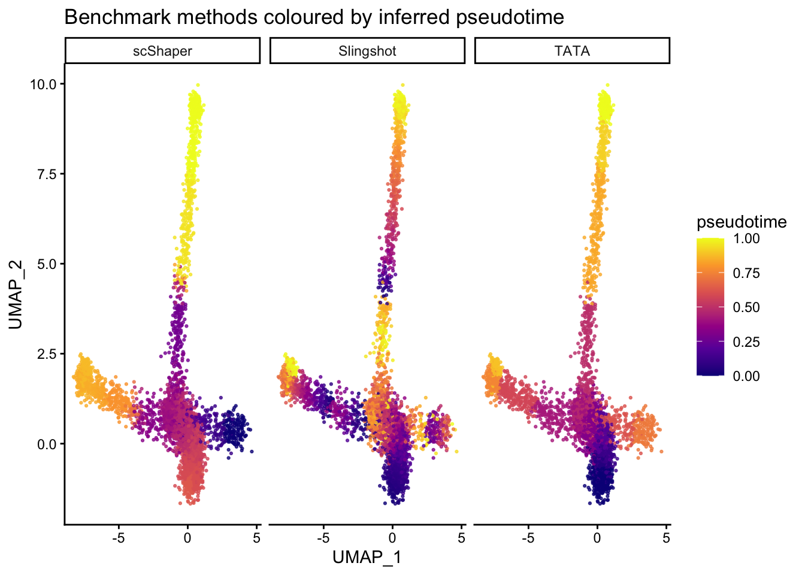
The next view compares inferred pseudotime directly against the known simulated progress variable. This makes it easier to see where a method respects the global progression but collapses or reorders particular branches.
if (have_benchmark_pkgs) {
progress_plot_df <- do.call(rbind, lapply(names(benchmark_pseudotime), function(method_name) {
data.frame(
true_progress = sce$progress,
inferred_pseudotime = benchmark_pseudotime[[method_name]],
condition = sce$condition,
method = method_name,
stringsAsFactors = FALSE
)
}))
ggplot(progress_plot_df, aes(x = true_progress, y = inferred_pseudotime, colour = condition)) +
geom_point(size = 0.45, alpha = 0.60) +
facet_wrap(~ method, nrow = 1) +
theme_classic() +
labs(
title = "Known latent progress versus inferred pseudotime",
x = "true simulated progress",
y = "inferred pseudotime"
)
}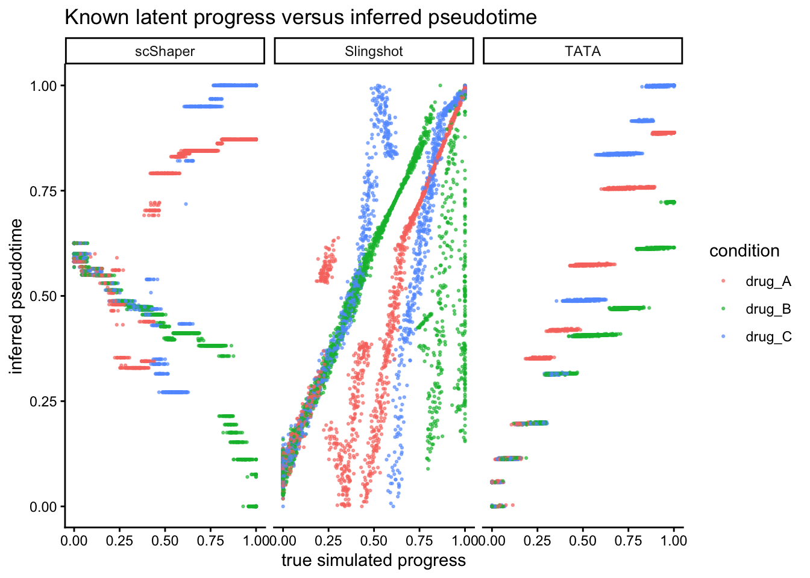
Benchmark metric catalog
Before computing the scores, the table below summarizes the benchmark panel in the same broad style used by scTRAM: embedding-based, pseudotime-based, and adjacency-based metrics. The main comparison across TATA, Slingshot, and scShaper uses the first eight rows; the final two graph diagnostics are shown separately because they are specific to TATA’s abstract graph output.
metric_catalog <- data.frame(
category = c(
"Embedding-based",
"Embedding-based",
"Embedding-based",
"Pseudotime-based",
"Pseudotime-based",
"Pseudotime-based",
"Pseudotime-based",
"Pseudotime-based",
"Adjacency-based",
"Adjacency-based"
),
metric = c(
"Graph-Based Trustworthiness",
"Neighborhood Preservation Score",
"Wasserstein Distance for Embedding",
"local_time_concordance",
"local_temporal_direction_score",
"adjacent_timepoint_auc",
"branch_onset_order_score",
"branch_onset_accuracy",
"directed_reachability_concordance",
"causal_edge_score"
),
what_it_measures = c(
"Whether neighbours recovered in the inferred trajectory space were also close in the known latent trajectory",
"How well local k-nearest-neighbour structure is preserved between the known latent trajectory and the inferred trajectory space",
"A higher-is-better transformation of the Wasserstein discrepancy between normalized pairwise-distance distributions in the truth and inferred spaces",
"The fraction of local cell-graph edges whose inferred direction agrees with experimental time",
"A higher-is-better summary of how rarely local pseudotime steps point backward in experimental time",
"How often later timepoints receive larger pseudotime than adjacent earlier timepoints",
"How well the inferred order of branch emergence matches the known order drug_A < drug_C < drug_B",
"How close the inferred branch-onset positions are to the known onset timing after normalization",
"Whether earlier clusters can reach later clusters in the directed abstract graph",
"The fraction of abstract-graph edge weight that does not point backward in time"
),
higher_is_better = TRUE,
stringsAsFactors = FALSE
)
metric_catalog category metric
1 Embedding-based Graph-Based Trustworthiness
2 Embedding-based Neighborhood Preservation Score
3 Embedding-based Wasserstein Distance for Embedding
4 Pseudotime-based local_time_concordance
5 Pseudotime-based local_temporal_direction_score
6 Pseudotime-based adjacent_timepoint_auc
7 Pseudotime-based branch_onset_order_score
8 Pseudotime-based branch_onset_accuracy
9 Adjacency-based directed_reachability_concordance
10 Adjacency-based causal_edge_score
what_it_measures
1 Whether neighbours recovered in the inferred trajectory space were also close in the known latent trajectory
2 How well local k-nearest-neighbour structure is preserved between the known latent trajectory and the inferred trajectory space
3 A higher-is-better transformation of the Wasserstein discrepancy between normalized pairwise-distance distributions in the truth and inferred spaces
4 The fraction of local cell-graph edges whose inferred direction agrees with experimental time
5 A higher-is-better summary of how rarely local pseudotime steps point backward in experimental time
6 How often later timepoints receive larger pseudotime than adjacent earlier timepoints
7 How well the inferred order of branch emergence matches the known order drug_A < drug_C < drug_B
8 How close the inferred branch-onset positions are to the known onset timing after normalization
9 Whether earlier clusters can reach later clusters in the directed abstract graph
10 The fraction of abstract-graph edge weight that does not point backward in time
higher_is_better
1 TRUE
2 TRUE
3 TRUE
4 TRUE
5 TRUE
6 TRUE
7 TRUE
8 TRUE
9 TRUE
10 TRUECompute scTRAM-style embedding and time-aware benchmark metrics
The embedding-based metrics are designed to resemble the scTRAM evaluation style, while the temporal columns are more directly targeted at the question TATA is trying to solve: does the inferred ordering respect the known experimental time progression? For readability, all scores shown in the main table below are formatted so that higher values are better.
if (have_benchmark_pkgs) {
benchmark_table <- do.call(rbind, lapply(names(benchmark_spaces), function(method_name) {
local_result <- local_temporal_order_metrics(
benchmark_pseudotime[[method_name]],
tata_benchmark$adjacency_matrix,
sce$timepoint
)
auc_result <- adjacent_timepoint_auc(
benchmark_pseudotime[[method_name]],
sce$timepoint,
group = sce$condition,
average = "weighted",
min_cells = 20
)
onset_result <- branch_onset_metrics(
benchmark_pseudotime[[method_name]],
branch = sce$condition,
branch_activation = sce$branch_activation,
true_onset = c(drug_A = 24, drug_C = 48, drug_B = 96),
activation_threshold = 0.25
)
data.frame(
method = method_name,
graph_based_trustworthiness = graph_based_trustworthiness(
truth_space,
benchmark_spaces[[method_name]],
benchmark_eval_idx
),
neighborhood_preservation_score = neighborhood_preservation_score(
truth_space,
benchmark_spaces[[method_name]],
benchmark_eval_idx
),
wasserstein_distance_for_embedding = wasserstein_distance_for_embedding(
truth_space,
benchmark_spaces[[method_name]],
benchmark_eval_idx
),
local_time_concordance = local_result$local_time_concordance,
local_temporal_direction_score = local_result$local_temporal_direction_score,
adjacent_timepoint_auc = auc_result$summary$adjacent_timepoint_auc,
branch_onset_order_score = onset_result$summary$branch_onset_order_score,
branch_onset_accuracy = onset_result$summary$branch_onset_accuracy,
runtime_seconds = c(
TATA = tata_benchmark_time[["elapsed"]],
Slingshot = slingshot_time[["elapsed"]],
scShaper = scshaper_time[["elapsed"]]
)[method_name],
stringsAsFactors = FALSE
)
}))
benchmark_table
} method graph_based_trustworthiness neighborhood_preservation_score
TATA TATA 0.9675290 0.2663492
Slingshot Slingshot 0.9707507 0.4848677
scShaper scShaper 0.9575666 0.2431217
wasserstein_distance_for_embedding local_time_concordance
TATA 0.9154686 0.97368421
Slingshot 0.9131579 0.60701003
scShaper 0.8639575 0.08987941
local_temporal_direction_score adjacent_timepoint_auc
TATA 0.9736842 0.9939210
Slingshot 0.6085315 0.7881004
scShaper 0.8702243 0.3652586
branch_onset_order_score branch_onset_accuracy runtime_seconds
TATA 0.3333333 0.3906791 0.261
Slingshot 0.3333333 0.2749536 5.975
scShaper 0.3333333 0.1628330 0.183if (have_benchmark_pkgs) {
metric_plot_df <- rbind(
data.frame(method = benchmark_table$method, metric = "Graph-Based Trustworthiness", value = benchmark_table$graph_based_trustworthiness),
data.frame(method = benchmark_table$method, metric = "Neighborhood Preservation Score", value = benchmark_table$neighborhood_preservation_score),
data.frame(method = benchmark_table$method, metric = "Wasserstein Distance for Embedding", value = benchmark_table$wasserstein_distance_for_embedding),
data.frame(method = benchmark_table$method, metric = "local_time_concordance", value = benchmark_table$local_time_concordance),
data.frame(method = benchmark_table$method, metric = "local_temporal_direction_score", value = benchmark_table$local_temporal_direction_score),
data.frame(method = benchmark_table$method, metric = "adjacent_timepoint_auc", value = benchmark_table$adjacent_timepoint_auc),
data.frame(method = benchmark_table$method, metric = "branch_onset_order_score", value = benchmark_table$branch_onset_order_score),
data.frame(method = benchmark_table$method, metric = "branch_onset_accuracy", value = benchmark_table$branch_onset_accuracy)
)
ggplot(metric_plot_df, aes(x = method, y = value, fill = method)) +
geom_col(width = 0.72) +
facet_wrap(~ metric, scales = "free_y") +
theme_classic() +
theme(legend.position = "none") +
labs(
title = "Benchmark metrics across TATA, Slingshot, and scShaper",
x = NULL,
y = "score"
)
}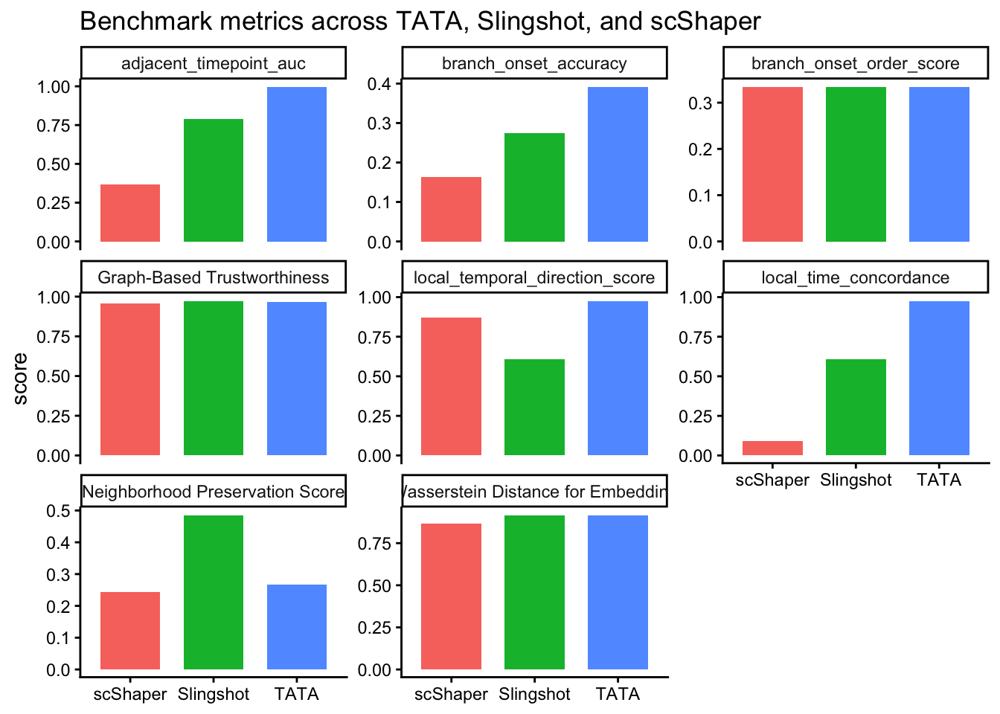
The runtime plot is not the main scientific comparison, but it is useful for understanding the practical trade-off between trajectory fidelity and speed.
if (have_benchmark_pkgs) {
ggplot(benchmark_table, aes(x = method, y = runtime_seconds, fill = method)) +
geom_col(width = 0.72) +
theme_classic() +
theme(legend.position = "none") +
labs(
title = "Elapsed runtime on the simulated dataset",
x = NULL,
y = "seconds"
)
}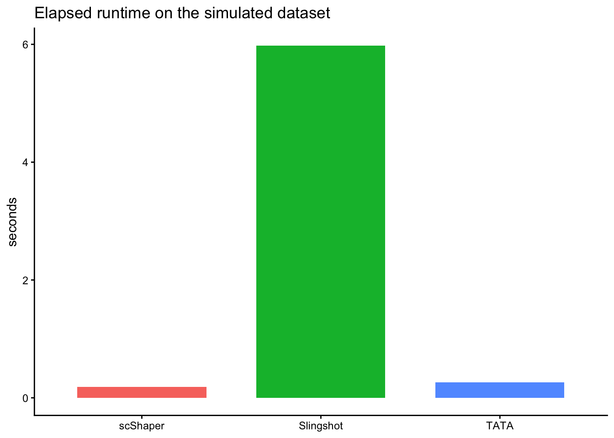
Compare branch-emergence timing explicitly
Finally, we compare the median inferred pseudotime of cells that are already meaningfully committed to each drug branch. This is a deliberately hard test for all three methods because the latest branch (drug_B) emerges from the shared center only at 96 hours.
if (have_benchmark_pkgs) {
emergence_plot_df <- do.call(rbind, lapply(names(benchmark_pseudotime), function(method_name) {
onset_result <- branch_onset_metrics(
benchmark_pseudotime[[method_name]],
branch = sce$condition,
branch_activation = sce$branch_activation,
true_onset = c(drug_A = 24, drug_C = 48, drug_B = 96),
activation_threshold = 0.25
)
out <- onset_result$onset_table
colnames(out)[colnames(out) == "branch"] <- "condition"
colnames(out)[colnames(out) == "inferred_onset"] <- "median_pseudotime"
out$method <- method_name
out
}))
emergence_plot_df$condition <- factor(
emergence_plot_df$condition,
levels = c("drug_A", "drug_C", "drug_B")
)
ggplot(
emergence_plot_df,
aes(x = condition, y = median_pseudotime, colour = true_onset, group = 1)
) +
geom_line(linewidth = 0.7, colour = "grey50") +
geom_point(size = 3) +
scale_colour_viridis_c(option = "plasma") +
facet_wrap(~ method, nrow = 1) +
theme_classic() +
labs(
title = "Median inferred pseudotime of committed cells in each drug branch",
x = "drug branch",
y = "median inferred pseudotime",
colour = "true onset (h)"
)
}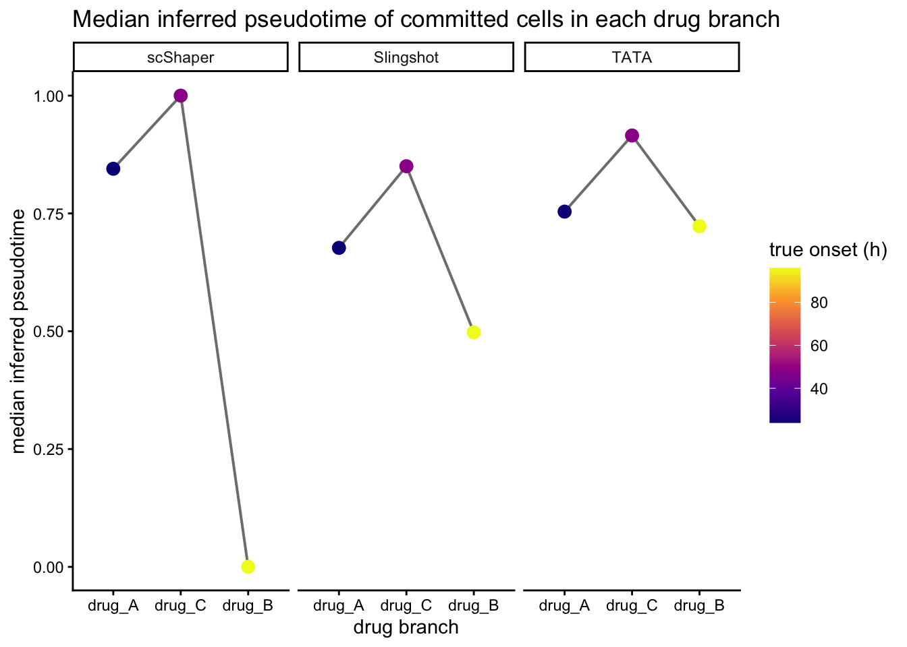
TATA-specific graph temporal diagnostics
The previous table compares all methods on pseudotime-derived metrics. TATA also produces a directed abstract graph, so we can additionally ask whether that graph itself follows the known direction of time. The two diagnostics below are useful for checking whether time-aware graph construction improves the abstract trajectory beyond topology alone.
if (have_benchmark_pkgs) {
tata_graph_time <- directed_reachability_concordance(
tata_benchmark$cluster_graph,
clusters = tata_benchmark$sce$tata_cluster_benchmark,
timepoint = tata_benchmark$sce$timepoint,
weight_by = "cells"
)
tata_graph_causal <- anticausal_edge_mass(
tata_benchmark$cluster_graph,
clusters = tata_benchmark$sce$tata_cluster_benchmark,
timepoint = tata_benchmark$sce$timepoint
)
tata_topology_graph_time <- directed_reachability_concordance(
tata_topology_only$cluster_graph,
clusters = tata_topology_only$sce$tata_cluster_topology_only,
timepoint = tata_topology_only$sce$timepoint,
weight_by = "cells"
)
tata_topology_graph_causal <- anticausal_edge_mass(
tata_topology_only$cluster_graph,
clusters = tata_topology_only$sce$tata_cluster_topology_only,
timepoint = tata_topology_only$sce$timepoint
)
tata_graph_table <- data.frame(
model = c("TATA time-aware", "TATA topology-only"),
directed_reachability_concordance = c(
tata_graph_time$summary$directed_reachability_concordance,
tata_topology_graph_time$summary$directed_reachability_concordance
),
causal_edge_score = c(
tata_graph_causal$summary$causal_edge_score,
tata_topology_graph_causal$summary$causal_edge_score
),
stringsAsFactors = FALSE
)
tata_graph_table
} model directed_reachability_concordance causal_edge_score
1 TATA time-aware 0.7309007 0.7987100
2 TATA topology-only 0.7309007 0.7978182Taken together, these results show the trade-off that motivated TATA. On this center-rooted simulation, Slingshot remains strong on geometry-centric metrics such as Graph-Based Trustworthiness, Neighborhood Preservation Score, and Wasserstein Distance for Embedding, while TATA is much more faithful to the known experimental ordering in metrics such as local_time_concordance, local_temporal_direction_score, and adjacent_timepoint_auc. The extra graph-level diagnostics then show whether that temporal signal is also reflected in the abstract graph itself. In other words, TATA is not trying to replace every geometry-driven method on every task; it is designed to inject real experimental time directly into the abstract trajectory graph when temporal plausibility matters.
test on real data
sce_test <- zellkonverter::readH5AD("../test_anndata.h5ad")
sce_test$time <- vapply(
strsplit(as.character(sce_test$sample), "_"),
function(x) as.integer(x[2]),
integer(1)
)standR::plotDR(sce_test, dimred = "X_umap", color = time, size = .1) +
scale_colour_viridis_c(option = "plasma")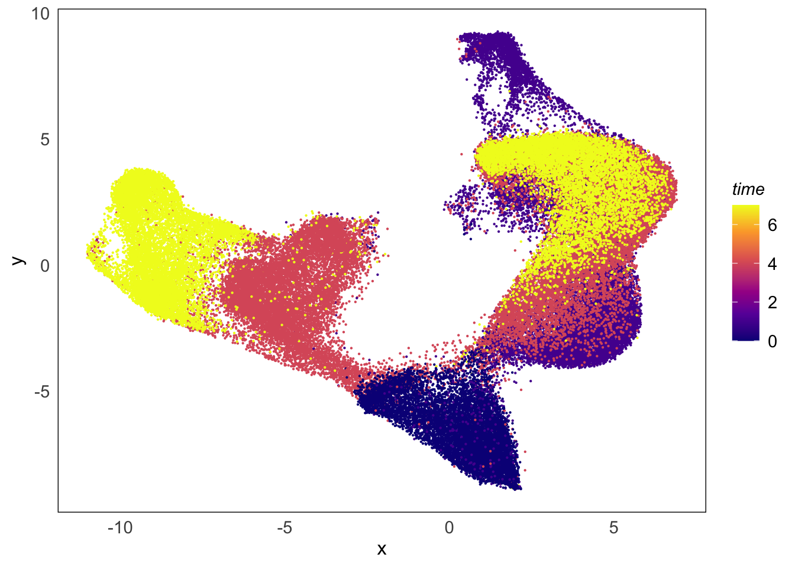
tata_test <- run_tata(
sce = sce_test,
dimred = "X_pca",
time_col = "time",
cluster_col = "tata_cluster",
k = 30,
cluster_method = "louvain",
alpha = 1,
beta = 1,
time_weight_mode = "directional_confidence",
direction_threshold = 0.10,
prune_threshold = 0.001,
do_pseudotime = TRUE,
seed = 101
)plot_tata_trajectory_embedding(
tata_test,
dimred = "X_fdl",
colour_by = "time",
mode = "full",
smooth_paths = TRUE
) +
ggplot2::ggtitle("Time-aware TATA trajectories on UMAP: full mode")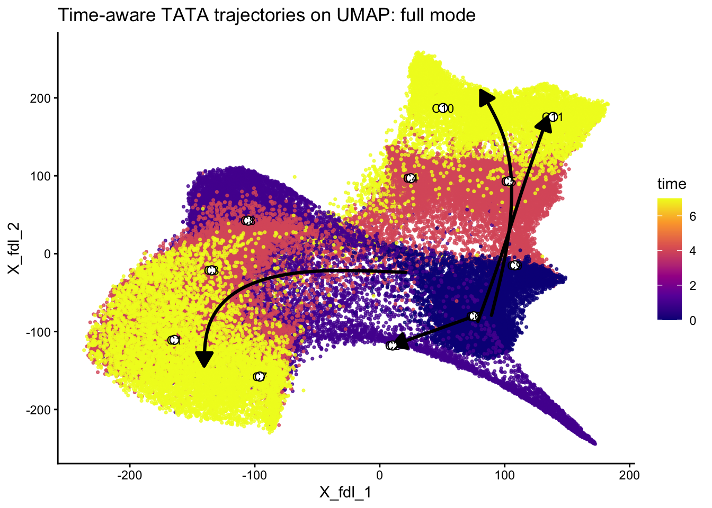
plot_tata_cluster_graph(
tata_test,
dimred = "X_fdl",
layout_mode = "embedding",
show_cells = TRUE,
colour_by = "tata_cluster",
node_colour_by = "cluster",
main = "TATA abstract graph aligned to UMAP"
)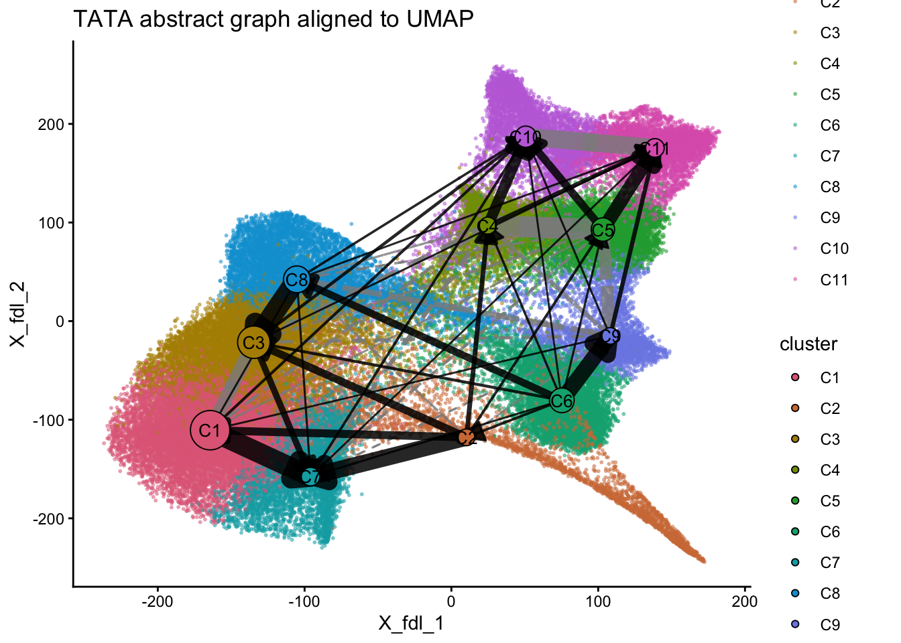